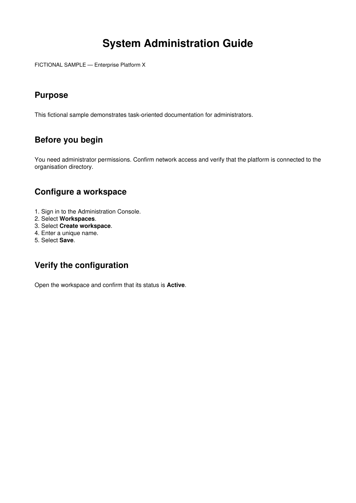
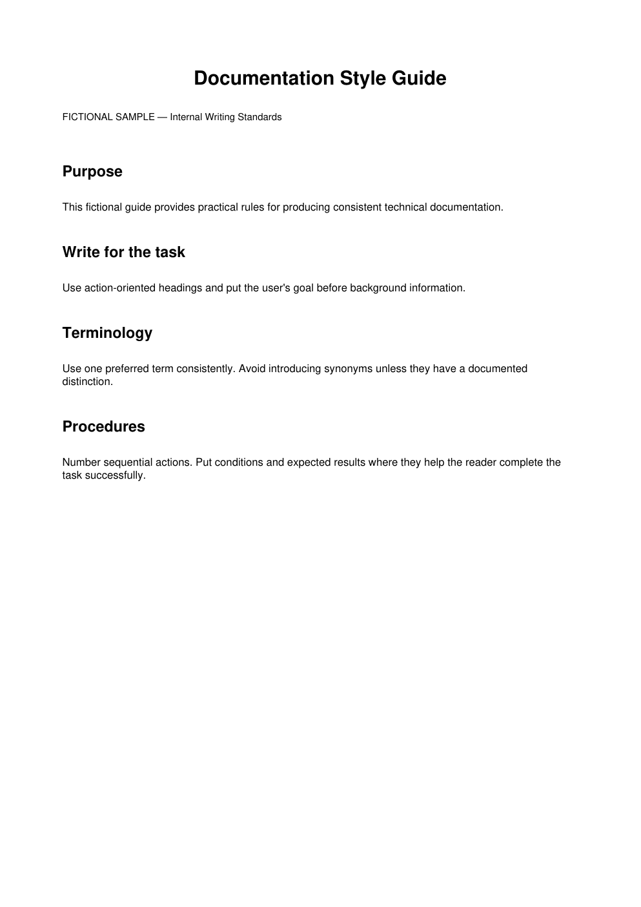

Complex products,
clearly explained.
Technical writer with 25 years in software, automotive, aerospace and telecoms. I write documentation people can actually use.
25 years · Automotive software · Oil services · Telecoms · Aerospace · IT · English & French · DITA · Docs-as-Code
Selected
work.
Real project samples, anonymized where needed, plus short examples of how I approach structure, style and migration.

Usage Guide — Body & Face Treatment Device
A printed leaflet that taught users to operate a treatment device on their own.
View project →
Installation Guide
Install, deploy, license, configure, troubleshoot: one guide for two audiences.
View project →
GitHub Review Procedure
An internal procedure that guides reviewers from pull request to approval.
View project →
VX-720 Cordless Phone User Guide
A user guide for a business cordless phone, from installation to troubleshooting.
View project →
From PDF to task-based online help
A task-based online help built from a linear PDF guide.
View project →
System Administration Guide
Task-based admin procedures for a fictional enterprise platform.
View project →
From legacy content to DITA
How I would model and migrate legacy content to DITA.
View project →
Documentation Style Guide
Practical rules for consistent terminology, style and procedures.
View project →Good documentation is not just good writing. It is structure, process, collaboration and knowing what the reader actually needs.
Language first.
Technology next.
Documentation in between.
I started out teaching, then studied technical communication and specialized translation. That led to almost 25 years of documentation work across automotive software, oil services, telecommunications, aerospace and IT.
Read my story →The tools behind the work.
Structured authoring, Docs-as-Code and review workflows, with the tools I use every day.
See the full toolbox →Have something complicated to explain?
I’m available for freelance contracts. Let’s talk about the documentation, content or process behind it.